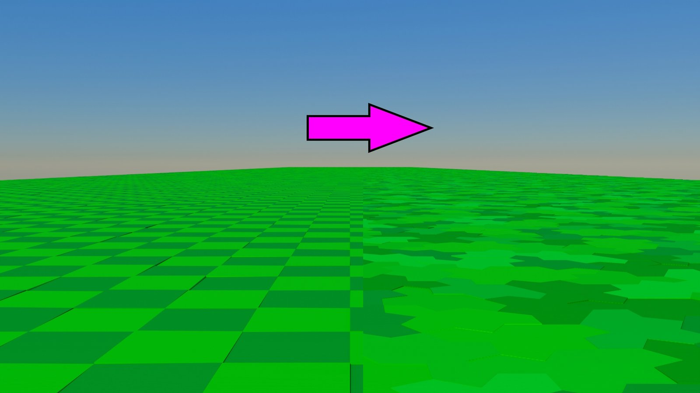
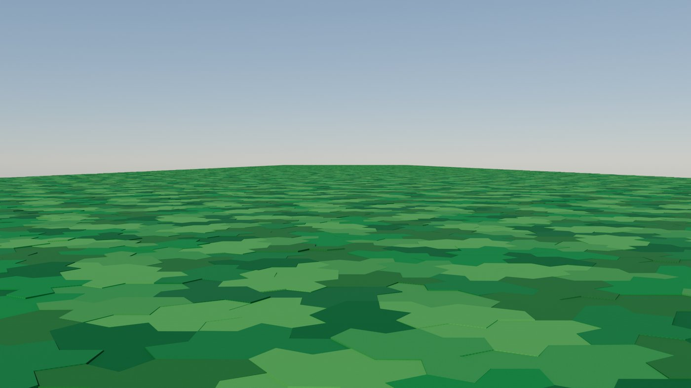
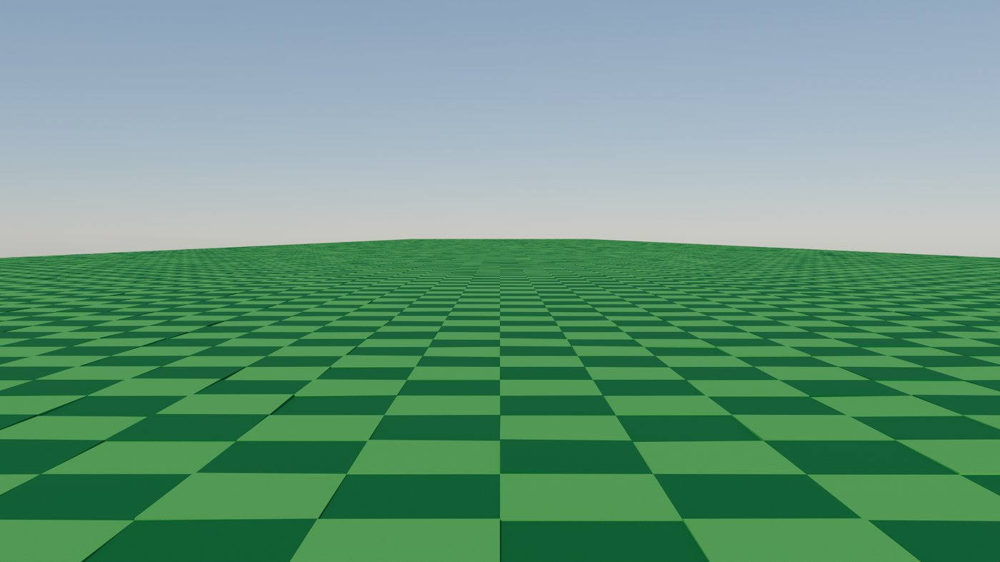

Aliasing
How periodic structure creates false patterns under sampling — and why aperiodic monotile layouts resist them.

{kind=link}
What aliasing is
In signal processing and computer graphics, aliasing is the appearance of false structure when a continuous (or finely detailed) signal is sampled too coarsely. A high frequency that the sampler cannot resolve does not disappear — it folds into a lower frequency the system can represent. On a screen that looks like shimmering edges, crawling lines, or striped bands that were never in the scene. The Nyquist–Shannon sampling theorem is the classical statement: to reconstruct a band-limited signal faithfully, you must sample at least twice its highest frequency.
Spatial aliasing is the same idea in 2D. A brick wall, a fence, a checkerboard, or a dense hatched fill has a dominant lattice frequency. When that frequency approaches the pixel (or sensor, or print-dot) frequency, the two grids beat — and you see a pattern that belongs to neither grid alone. That beat is closely related to moiré; aliasing is the sampling-side story, moiré the overlay story.
Why regular tilings are fragile
Periodic monohedral tilings — squares, hexagons, brickwork — are efficient and familiar, but they put almost all of their energy on a few reciprocal-lattice peaks. Point a camera, mipmap a texture, or print at an awkward DPI, and those peaks are exactly what collide with the sample lattice.
Anti-aliasing filters (mipmaps, supersampling, anisotropic filtering) try to remove frequencies the display cannot carry. They help, but they also blur. Random noise textures dodge the lattice problem by having no coherent peaks — at the cost of structure, reproducibility, and clean fabrication IDs.
Aperiodic monotile patches sit between those extremes: ordered but non-repeating, with diffraction more like a quasicrystal than a crystal — sharp features, yet no single translational lattice to lock onto the sample grid.[6][27] Sensor-array simulations on Hat-family layouts show the same principle in hardware: aperiodic monotile arrays can outperform tested periodic and other aperiodic baselines for spatial sampling and reconstruction.[37]
A cleaner monotile surface
Below, a landscape shaded with an aperiodic monotile packing. There is still plenty of edge detail, but the structure does not present one repeating period for the image grid to quarrel with — so the surface stays readable instead of dissolving into false bands.

The periodic failure mode
Contrast that with a checker / periodic shading of a similar scene. As soon as the repeating cells approach the pixel scale, aliasing takes over: sparkle, moiré-like stripes, and crawling edges that move when the camera or the mip level changes. The geometry of the hills is the same idea; the lattice is what breaks.

Practical takeaways for monotile work
- Textures and decals — prefer aperiodic packing when the pattern will be viewed across many scales (games cameras, print proofs, video).
- Scatter and fill — monotile instance layouts avoid the row/column bands of a grid scatter without looking random.
- Halftone and fabrication — when a screen or toolpath is itself periodic, pairing it with a periodic artwork doubles the risk; an aperiodic artwork removes one of the two lattices.
- Do not confuse the two effects — deliberate layered overlays are moiré research; accidental undersampling of one lattice is aliasing.
See Computer graphics and Signal processing and imaging for workflow detail.
See also
Moiré, Computer graphics, Signal processing and imaging, Aperiodic monotile
Categories: Concepts · Computer graphics · Research frontiers